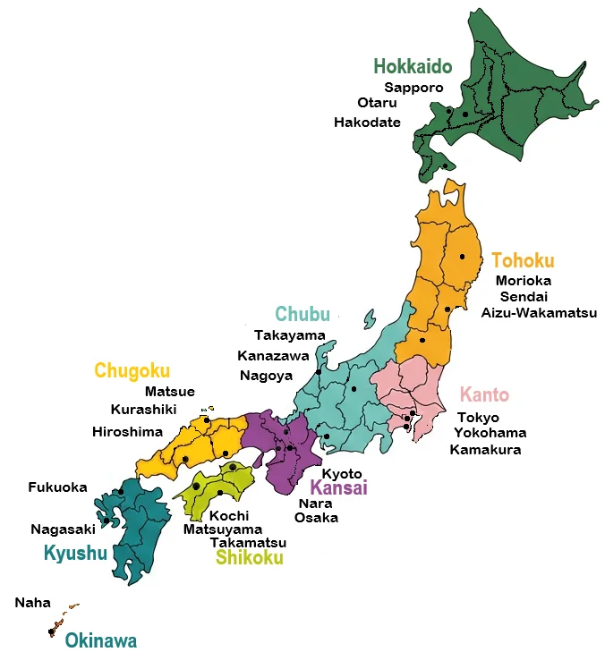

Gaijin, Kudasai
eSIM • Suica • Airports • Trains • Events
Japan, crystal clear
News • Weather • Sports • Tools • Facts
Explore Japan
Select a colored region on the map or city name to discover more.

Japan News
RSS feed will load here.
Weather Overview
Weather data will load here.
Train Status
Train updates will load here.
Airport Status
Airport updates will load here.
SIM & Mobile Carriers
Events in Japan
Event feed will load here.
Concerts in Japan
Concert feed will load here.